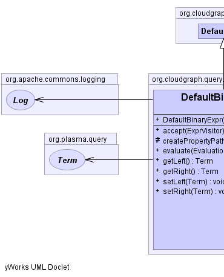
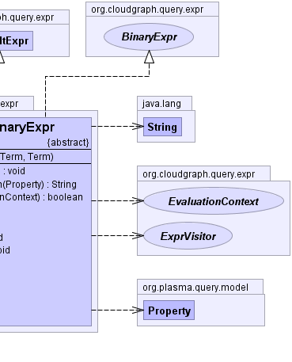

public abstract class DefaultBinaryExpr extends DefaultExpr implements BinaryExpr
Term,
ExprVisitor,
EvaluationContext|  |  |
| Constructor and Description |
|---|
DefaultBinaryExpr(org.plasma.query.Term left,
org.plasma.query.Term right)
Constructs an expression using the given terms
|
| Modifier and Type | Method and Description |
|---|---|
void |
accept(ExprVisitor visitor)
Begins the traversal of the expression tree with this node as the root.
|
protected java.lang.String |
createPropertyPath(org.plasma.query.model.Property property) |
boolean |
evaluate(EvaluationContext context)
Returns a "truth" value for the expression based on the given context.
|
org.plasma.query.Term |
getLeft()
Returns the "left" child node for the expression.
|
org.plasma.query.Term |
getRight()
Returns the "right" child node for the expression.
|
void |
setLeft(org.plasma.query.Term left) |
void |
setRight(org.plasma.query.Term right) |
toStringpublic DefaultBinaryExpr(org.plasma.query.Term left,
org.plasma.query.Term right)
left - the "left" expression termright - the "right" expression termpublic org.plasma.query.Term getLeft()
BinaryExprgetLeft in interface BinaryExprpublic void setLeft(org.plasma.query.Term left)
public org.plasma.query.Term getRight()
BinaryExprgetRight in interface BinaryExprpublic void setRight(org.plasma.query.Term right)
public boolean evaluate(EvaluationContext context)
public void accept(ExprVisitor visitor)
accept in interface BinaryExpraccept in interface Exprvisitor - the expression visitorprotected java.lang.String createPropertyPath(org.plasma.query.model.Property property)
CloudGraph® is a registered trademark of TerraMeta Software, Inc. Copyright © 2014 - All Rights Reserved.